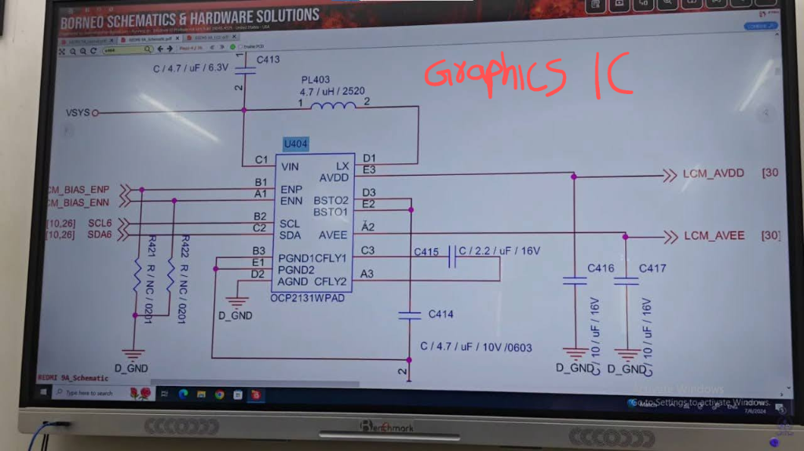
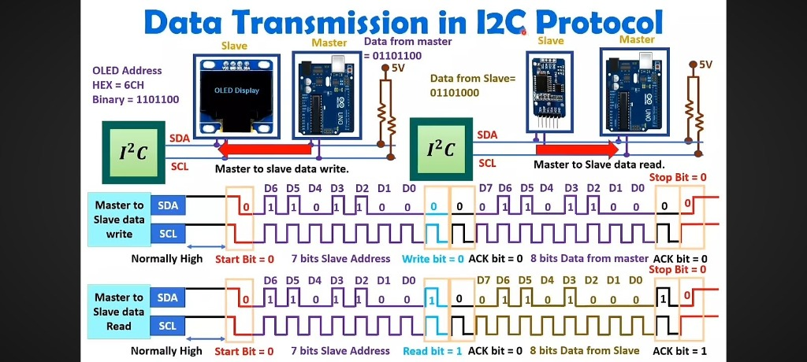
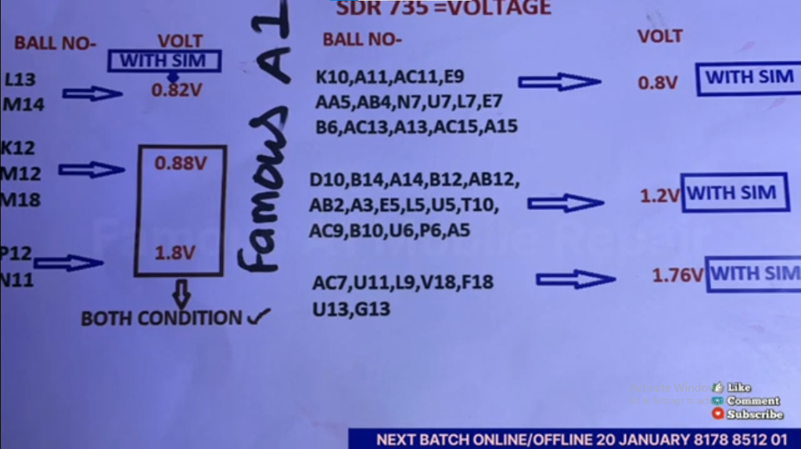
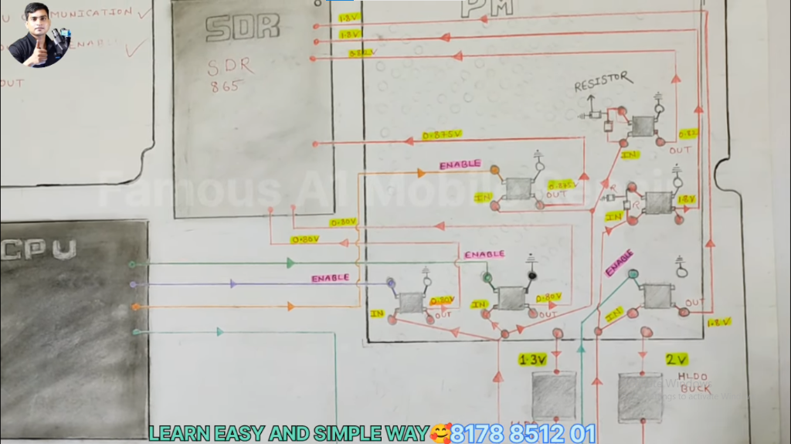

ElectroCompanion App
Your ultimate interactive electronics workbench companion.
⚡ Getting Started
- Rotate the dial on the multimeter sidebar/header to select a measurement tool.
- Press the yellow SEARCH button on the DMM face to search components.
- Press the LIGHT button to change the LCD backlight color.
Datasheet & Component Lookup
Search common components offline, view package pinouts, or click to query internet datasheets instantly.
Resistor Color Code Calculator
Determine resistance values by picking band colors, or input a resistance value to decode its band layout.
Select Band Colors
Decode Resistance Value
Type a resistance to calculate and display its color code automatically.
Decode SMD Resistor Code
Type a standard 3-digit, 4-digit, or EIA-96 SMD resistor code. The resistance value is calculated in real time.
Encode Value to SMD Code
Type a resistance value to calculate its corresponding SMD code combinations.
Series & Parallel Calculator
Add resistor values below to compute their total equivalent resistance in series or parallel.
Dynamic Circuit Schematic
Capacitor Markings Decoder
Read standard three-digit ceramic or film capacitor codes and tolerance letters in seconds.
Decoder Parameters
Decode Capacitance Value
Type a capacitance to calculate and display its standard 3-digit code automatically.
LED Current-Limiting Resistor Calculator
Quickly find the required series resistor value and power rating to protect an LED from burning out.
Calculator Parameters
Inductor Color Code Calculator
Decode axial inductor color bands to inductance values, or convert an inductance value to color bands.
Select Band Colors
Decode Inductance Value
Type an inductance value to calculate and display its color code automatically.
Electronics Physics Laws Solver
Select a circuit formula, input any two parameters, and calculate the missing value instantly.
Select Equation / Law
Ohm's Law Calculator
Enter values into any two boxes. The third parameter will be computed automatically.
Alternative & Substitute Components
Find safe replacements for damaged diodes, BJTs, MOSFETs, and linear regulators in your workshop.
Select Damaged Component
BC547
NPN BJTInteractive Component Tester
Select any component from the database to run an offline test using the skeuomorphic multimeter simulation.
Select Component to Test
-
RCCB Tripping Route Map
Systematically locate and isolate earth leakage faults in your house wiring.
📋 System Configuration Setup
Configure your home electrical setup to adapt the troubleshooting route map.
💡 Key Diagnostic Assumptions
- Neutral-to-Ground Shorts: Neutral leakage to ground will trip the RCCB even when the MCB (which only breaks the phase wire) is OFF. Identifying neutral wires at the Distribution Board (DB) is key.
- Inverter Backfeeding: Inverters can maintain a separate neutral loop, bypass mains earth, and keep feeding leakage currents back into the panel even if input breakers are switched OFF.
- Solar DC Injections: Solar inverters generate high frequency DC leakage. Standard Class AC RCCBs saturate ("blind") and fail to trip or trip erratically, necessitating dedicated isolation checks.
Interactive Panel Schematic
Flick simulated breakers or disconnect terminals below to see testing flows.
📚 Real-World Case Studies
Read technical breakdowns of actual household earth-leakage tripping scenarios.
Case 1: The "Backdoor" Neutral-Earth Arc (Ceiling Light Driver)
Symptom: A ceiling light pops, blinks, and trips the RCCB on main powerup, even when its Neutral line is completely disconnected at the Distribution Board. The driver has a plastic cover and no earth connection.
Technical Breakdown: The Neutral wire inside the wall had an insulation breakdown (measuring 154 kΩ to Earth under a 9V DC multimeter test). When powered by 230V AC, the high voltage arced over, dropping resistance to near-zero. Current flowed through the Live wire, into the driver, and returned down the leaking Neutral wire directly into Earth, completing a "backdoor" loop bypassing the DB neutral bus bar.
Case 2: Inverter UPS Feedback & Whole-House Flickering
Symptom: When switching the house over to battery power/inverter output, lights across the entire house begin flickering rapidly, or the RCCB trips.
Technical Breakdown: The inverter output neutral was cross-connected back to the main utility neutral bar downstream of the RCCB. This creates a parallel path for neutral currents. When the inverter bonds neutral to earth during backup, current loops back through the RCCB sensing ring, causing immediate trips or floating ground potential discrepancies (leading to LED flickering).
📝 Job Troubleshooting Logger
Document your diagnostics and resolutions to keep a workbook for future reference.
Saved Diagnostics Workbook
No logged jobs yet. Fill out the form above to add one.
Diagnostic AI Chatbot
Offline Expert Mode ActiveMobile Repair Notes & Solutions
Troubleshoot common smartphone motherboard failures with professional schematics, symptom checklists, and solutions.
Categories
⚡ Normal Charging Benchmarks
STANDARD READINGS1. Battery Thermal Error (Tecno & Infinix)
Common to Spark Go, Pop, and most Infinix models🛑 Other Symptoms
- Battery temperature too low / too high warnings on screen.
- Generic battery error overlay.
- Battery contact/connection error warning.
🔍 Possibilities & Causes
- Missing voltage reference (2.8V / 2.2V) to the thermal analog-to-digital line.
- Water damage causing shorted capacitor in thermal line between Power IC and battery connector.
- Missing / broken 13K pull-up resistor ($R_1$) in the voltage divider network (essential for battery NTC ratio measurement).
- Missing 500Ω feedback resistor in the CHG_TEMP_ADC line to Power IC.
✅ Solutions
- Change shorted capacitor on the thermal trace.
- Replace missing/damaged resistors (13k pull-up $R_1$, 500Ω ADC trace feedback, 10k battery internal NTC $R_2$).
- Reball / reflow Power IC (Unisoc/MTK) if internal ADC trace pad is fractured.

2. Samsung A13 Slow Charging / Fake Charging
Troubleshooting charging loop errors and current dropouts🛑 Other Symptoms
- Slow charging: Shows 5-6 hours to complete.
- Fake charging: Displays charging icon, but battery percentage drops or stays static.
🔍 Possibilities & Causes
- CC Strip / Sub-board Flex damaged: Communication lines fractured.
- USB Data Lines Broken: Data+ (DP) and Data- (DM) traces to the charging IC are open.
- OVP (Over-Voltage Protection) IC: VDET pin logic connection to the MOSFET gate is broken.
Note: The MOSFET acts as a bypass switch. Drain = CHG_D_N (charger data negative) of USB port; Source = DM (data minus) of Charging IC pin.
- PD (Power Delivery) IC Disintegrated: If separate from main charging IC, check that CC1 & CC2 configurations lines from USB-C port to PD IC are intact.
✅ Solutions
- Replace the charging sub-board (CC Board) or the main FPC connecting ribbon.
- Bypass OVP IC logic / replace OVP if input voltage is fine but VOUT is drop-locked.
- Trace and bridge fractured DP/DM lines to the Charging IC pins.
- Check/solder fractured pads under the PD communication control IC (U5003).

⚡ DC Machine Settings & Normal Benchmarks
4V 5A CALIBRATIONConfigure DC Power Supply (DC Machine) to 4.0V, 5.0A. Boot cable standby current should read 0.004 A (4mA) or less under normal state.
🛑 Abnormal Current Stand-by & Boot Patterns
DIAGNOSTIC MATRIX(66mA - 203mA)
(1.000A & above)
(0.018A -> 0.000A)
(Loop within ~0.100A)
(Direct jump to 0.400A+)
(Stuck at ~0.080A)
(Active Amp fluctuations)
📋 Specific Motherboard Case Studies
1. Generic Dead Motherboard
CASE 1🔌 DC Standby (Motherboard): 0.000 A
⚡ After Trigger: 0.001 to 0.002 A (then back to zero)
- PMIC (Power Management IC) not functioning.
- Secondary line shorted to ground.
Set multimeter to Buzzer/Diode mode, place red probe on Ground, and use black probe to measure diode values in buck coils near the PMIC. Checks if PMIC pins are dry (cold solder) or shorted.
• S3 Coil (0.8V): CPU line shorted (Requires CPU reball).
• S4 Coil (0.8V): CPU line shorted (Requires CPU reball).
2. Samsung A53 5G / M-Series CPU Issues
CASE 2🔌 DC Standby (Motherboard): 0.000 A
⚡ After Trigger: 0.140 A (then back to zero)
- CPU dry soldering: Extremely common in Samsung M & A series due to heat expansion/contraction.
- USB Auto Port Detection: If stuck and stable at 90 - 100 mA (0.090A - 0.100A) and computer detects driver without power trigger, there is a communication fault or short between CPU and EMMC (reball both).
Perform a professional CPU reball. Clean motherboard pads, apply middle-temperature solder paste to CPU stencil, reflow, and realign CPU.
3. Samsung A23 "Dead While Using"
CASE 3- VPH line shorted to ground.
- Secondary line shorted.
- Display and LED driver IC output capacitor is half-shorted.
- Remove charging IC to isolate if short is in VBAT (primary) or VPH (secondary) line.
- Inject voltage (start with 1.5V up to 3.8V, high current) at shorted line.
- Identify hot component with rosin smoke or thermal camera, check if capacitor is half/full short, and remove it.
4. VIVO V21E 5G Motherboard Short
CASE 4🔌 DC Standby (Motherboard): 0.207 A (High leakage)
- VPH line shorted to ground.
- Low diode values on battery connector traces.
- PMID line from charging IC is shorted.
- Both half short in primary and full short in secondary line caused by PMID capacitor short.
- Inject voltage into VBAT (primary line).
- Inject voltage into VPH line (output coil of the charging IC in the secondary line).
- Observe component heat signatures, locate the shorted PMID capacitor, and remove/replace.
5. VIVO Y17S 5G Low Boot Loop
CASE 5⚡ After Trigger: 0.019 A (then drops to zero)
- PMIC (Power Management IC) failure.
- Buck coil shorted.
- LDO voltage output line shorted.
Test diode value on buck coils and LDO outputs. Pinpoint the specific line shorted to ground and remove/replace the faulty component (e.g. buck capacitor or PMIC reball).
6. VIVO Y36 Static Current Leakage
CASE 6⚡ After Trigger: 0.003 A (static, no rise)
🔋 Battery reverse diode: Rev = ~350-450 | Fwd = 2000+
- VPH line short.
- Charging IC shorted internally (drawing static 3mA and blocking trigger logic).
- Remove Charging IC to isolate primary and secondary lines, determining the source of the 3mA leak.
- If the leak persists, check primary lines using a boot cable.
- If the leak stops, perform voltage injection in the secondary VPH coil.
7. Redmi Note 7 Water Damaged Half Short
CASE 7⚡ DMM Diode Mode: 1728 (abnormal leakage on LDO line)
🎯 Faulty Rail: VREG_L3_3P0 (3.0V Sensor LDO)
- Severe water corrosion located in the sensor power supply LDO circuit (VREG_L3_3P0), running to the sensor VDD and sensor LED capacitors.
- Before cleaning: Dead short (0 Ω) on the sensor VDD capacitor.
- After cleaning: Standby current leak of 0.140A. High leakage (1728 diode value) on both capacitors.
- Bitmap tracing: Traced
VREG_L3_3P0routing to the G-GYRO (Gyroscope) sensor. Removing the RF shield revealed massive corrosion.
Remove the corroded capacitors around the G-GYRO sensor. If the half-short persists at the sensor VDD capacitor, isolate and desolder the main VDD filter capacitor feeding directly into the Gyroscope sensor IC (or replace the corroded sensor IC itself) to clear the leakage.
⚡ Sleep Mode Benchmarks
NORMAL READINGS1. Permanent Sleep Mode (Black Screen on Wake)
Common to Samsung A13, A15, A17, and S Series🛑 Symptoms
- Permanent sleep: After powering on or screen dimming, the device goes to sleep mode forever and won't wake up.
- Incoming calls active: Calls are coming through (phone rings/vibrates), but the screen remains completely black.
- Connector Overheating: Display strip or FPC connector area feels warm/overheated.
🔍 Possibilities & Causes
- Fungus/Corrosion: Corrosion in the display flex connector strip shorting out logic lines.
- Hall IC VDD Missing: The 1.8V input voltage line (VDD) to the Hall magnetic sensor IC is broken or open.
- Hall IC Output Logic Low: Hall IC output is stuck at logic low (1.8V missing/shorted to ground) even when no magnet is present, tricking the CPU into thinking the magnetic flip cover is closed.
- Broken CPU Track: The output communication track from the Hall IC to the CPU is fractured/open.
✅ Solutions
- Ultrasonic / Manual Clean: Clean display FPC connectors on both the main board and the sub-board using high-grade isopropyl alcohol (IPA).
- Hall Sensor Inspection: Check both Hall IC sensors (on the main board and sub-board/charging board). Check input VDD (1.8V) and output state (should be high, ~1.8V, when no magnet is present).
- Jumper Connecting Strip: If the connection between the main board and the sub-board is broken, solder a jumper wire across the corresponding Hall sensor track on the main board and sub-board.
Primary Backlight Failure Symptoms
Core Issue: The device exhibited vibration and successful charging current consumption, but the display remained dark, with only faint, backlight-free images visible (under a strong flashlight).
⚡ Backlight Circuit Architectures
MAIN COMPONENTS📍 Core Components
- Driver IC: Boost converter IC powered directly by the VPH line.
- Schottky Diode: High-speed rectifying diode to block reverse voltage.
- Boost Coil: Inductor storing magnetic energy to step up voltage (typical values: 4.7 µH to 10 µH).
⚙️ Driver IC Configurations (Two Types)
- Integrated LED & LCD Bias: Controls both screen bias (+5V/-5V) and LED lighting (identified by two boost coils near this kind of IC).
- Separate Drivers: Separate ICs for each function. The LCD driver IC outputs VSP (+5.9V) & VSN (-5.9V) after graphics switch handshake (enabling normal display graphics).
📈 Normal Operating Voltages (Boost Capacitor / Coil)
DMM VOLTAGE READOUTS📋 Initial Verification Benchmarks
- Display Connector Voltage: Checked at the display connector, it measured
4.0V(matching the battery's current state), confirming that the input line, series resistor, boost coil, and diode were initially functional in terms of basic voltage throughput. - Control Signals: The Enable and LCD CAPSI (PWM) lines both registered
1.8V, indicating that the SOC and display were correctly sending necessary activation signals to the backlight driver.
1. Mismatch: No Adjustment in Brightness
REPLACEMENT ERRORSymptom: Screen boots up correctly, but brightness is locked and does not adjust (often caused by an ampere mismatch between the motherboard and a new LCD display combo).
- LED Driver Not Switching: The LED driver section IC is not switching.
- Coil Inductance Drift: The LED driver section coil is not at the proper Henry/inductance value as per schematics (even if you get 24-42V after trigger).
Change the boost coil or the LED driver IC.
2. Samsung A12 No Backlight
INTEGRATED BIASSymptom: Display is completely black. The motherboard boots (vibration/sound), but the backlight is off. Uses an integrated LED & LCD bias driver circuit IC.
- Output Capacitor Short: Boost filter output capacitors are fully or half-shorted.
- Open Boost Coil: Main lighting boost coil winding has broken (open circuit).
- Diode Failure: Schottky rectifying diode is shorted.
- IC Short: Integrated driver IC is shorted internally.
Locate and change the shorted component (capacitor, coil, diode, or IC).
3. iQOO Z9x 5G No Backlight
INDUCTANCE DRIFTSymptom: Despite correct input and control voltages, the output voltage failed to boost, causing a completely dark display.
Measured the boost inductor's value using an **LC meter** (Inductance-Capacitance meter).
Found the inductance value was only 2.2 µH, significantly below the required 10 µH typical for this circuit, confirming the inductor was faulty despite passing a standard DMM continuity test.
Replace the boost inductor with a correct 10 µH coil.
🚫 No Light & No Graphics Diagnostic Matrix
DISPLAY POWER HANDSHAKE📱 AMOLED Panel Circuits
- EL Bias Voltages (Graphics active):
• VDD_LCD_ELVSS: -4.4 V
• VDD_LCD_ELVDD: +4.4 V
• VDD_LCD_ELAVDD: +7.6 V - Operating Voltages:
• VDD_LCD_1P8: 1.8 V (from PMIC to connector)
• VDD_LCD_3P0: 3.0 V (from VPH LDO output)
• VPH_PWR: 3.3 V (to LDO regulator input)
• LCD_3P0_EN: Active CPU Enable to LDO -
MIPI Tracks (DSI Interface): High speed data lines routing from CPU:
• VDD_1P8_AP (Reference voltage)
• MIPI_DSI0_D0_N / P • MIPI_DSI0_D1_N / P
• MIPI_DSI0_D2_N / P • MIPI_DSI0_D3_N / P
• MIPI_DSI0_CLK_N / P - 🔑 Connection Detect (OCTA_CON_DET): Snapped-in display grounds this pull-up line. The CPU registers it, sending EN to the 3.0V LDO and telling the PMIC to output VDD_LCD_1P8.
🖥️ IPS Panel Circuits
- Display Bias Voltages:
• LCD_VSP: +5.0 V
• LCD_VSN: -5.0 V - Operating Voltages:
• Display VCC: 1.8 V
• CPU Enable lines: 2 × EN pins (1.8V) from CPU to Graphics IC for both VSP & VSN. - Display MIPI Tracks: DSI differential tracks routing straight from the CPU.
-
Separated Driver Layout: In separate IC configurations, bias (graphics) voltages are labeled
LCD_VSP&LCD_VSN, orAVDD&AVEE.
🖥️ Graphics IC Schematic (Borneo Solutions)
U404 OCP2131WPAD graphics bias driver circuit
🔍 General Failure Possibilities
- Moisture/Corrosion: Liquid damage inside the display connector shorting out logic lines.
- MIPI Signal Missing: Open or shorted CPU display tracks (check filter arrays).
- Operating Voltage Missing: Dead LDO (3.0V) or dead VCC (1.8V) PMIC rail.
- OCTA_CON_DET Failure: Snapper pin shorted to ground or fractured trace to CPU.
1. Samsung A54 5G No Light & Graphics
AMOLED DEADSymptom: Display is completely black (no backlight and no graphics/picture). Motherboard boots, phone vibrates and rings, but screen rails measure 0V.
The 3.0V display operating voltage (VDD_LCD_3P0) line is dead. The filter capacitor on the output of the LDO regulator (which gets VPH 3.3V input) was fully shorted to ground, causing the PCB trace to burn out and isolate the supply to the connector.
De-solder/remove the shorted capacitor. Clean the carbonized board trace and solder a copper jumper wire from the LDO output pin directly to the display connector pad to restore the 3.0V supply voltage.
2. Samsung A35 5G No Light & Graphics
DETECT SHIELDSymptom: Screen is dead, showing no backlight or picture. Power logic voltages (1.8V and 3.0V LDO outputs) measure 0V, but standard VPH rails are fine.
The OCTA_CON_DET (display detection pin) pull-up resistor is shorted directly to Ground, or the CPU track has fractured. The CPU cannot register displays being connected, preventing the enable signals (LCD_3P0_EN) from being sent.
Replace the shorted pull-up resistor near the FPC display connector. Solder/restore any fractured or broken connection detection traces to the CPU pin to enable normal boot handshakes.
📶 RF Front-End Architecture
RF PATHWAY📍 Core Transceiver Components
- 2G IC: Power Amplifier (PA) chip dedicated to low-frequency legacy networks and fallback.
- RF Transceiver (IF IC): Converts intermediate frequencies to baseband signals (operating voltages: 1.2V & 1.8V).
- 4G IC: LTE Power Amplifier. Requires 3 distinct power rails to transmit:
• VPH: Direct Battery voltage (standby)
• VREG_L9A_1P8: 1.8V Logic rail from PMIC
• VPA_APT: Dynamic PA tracking power from the APT Buck regulator (active under SIM load) - APT IC: Average Power Tracker LDO/Buck that modulates 4G IC output power depending on signal conditions.
📋 Standard Signal Verification Checklist
NORMAL METRICS🔍 4G IC Diagnostic Test (Radio Power Verification)
If the device cannot register 2G fallback while 4G LTE is down, the 4G IC is likely damaged. To confirm:
2. Go to: Phone Information > Mobile Radio Power switch.
3. If turned OFF, toggle it ON. Click Back, then re-enter the menu.
4. 🛑 If it automatically reverts to OFF: The 4G IC has failed / shorted.
💳 SIM Card Detection & Pinout Logic
SIM TRAY PINOUT⚙️ SIM Power Handshake Sequence
When a SIM card is inserted, it physically moves the SIM_CON_DET mechanical switch. This logic transition signals the CPU to start the initialization sequence.
Only after this trigger will the CPU instruct the PMIC to output the VDD (Voltage Supply) rail to the SIM tray.
🛑 Key Failure: If the SIM_CON_DET switch contacts are dirty, oxidized, or shorted, the CPU will never register that a SIM card has been inserted and will never enable the VDD power line.
⚠️ Common Network Failure Points
- RF IC Voltages: RF Transceiver missing its critical 1.2V and 1.8V regulator supply rails.
- RF IC Failure: Transceiver chip itself is dead or fractured underneath.
- RFFE (RFFP) Communication:
RFFE_SDA(Data) orRFFE_SCL(Clock) control communication lines are shorted to ground or open-circuited. - APT Buck Regulator: Output power tracking voltage (VPA_APT) is missing or shorted.
- 4G IC Short: The 4G LTE amplifier chip is shorted to ground, shutting down radio power.
1. Moto E40 No Service Issue
RF IC DEADSymptom: Device shows "No Service" or "Emergency Calls Only" constantly. Range connection in both 2G and 4G modes fails to enable. SIM card is detected, but RF transceiver cannot register baseband status.
The primary RF Transceiver IC is completely dead, preventing frequency synthesis and RF conversions.
De-solder and replace the RF Transceiver IC with a functional chip.
2. Redmi 9 Power No Service Issue
4G IC SHORTEDSymptom: Device shows "No Service". Switching network modes to 2G does not work. SIM card tray reads OK. The Mobile Radio Power switch turns off automatically within 1 second of toggling it on. APT voltage (VPA_APT) is 0V.
The 4G Power Amplifier IC is shorted internally, causing a voltage collapse on the LDO regulator. This cuts off APT Buck supply output, prompting Android security firmware to disable Mobile Radio Power.
Replace the shorted 4G IC chip. Confirm that Mobile Radio Power stays enabled and verify that the APT Buck regulator outputs correct voltage.
3. Redmi 10i 5G No Service & WiFi
CPU BALL COLLAPSESymptom: Device has absolutely no cellular service (No Service) and WiFi fails to scan, toggle on, or connect. SIM card tray reads OK. RF transceiver voltages are normal.
Thermal stress and board flexing have caused the solder connections (solder balls) under the main CPU to fracture or collapse. This breaks the high-speed communication buses linking the CPU to both the baseband RF IC and the WiFi/Bluetooth module.
Perform a CPU reball (remove the CPU, clean the PCB pads, apply new solder balls to the CPU, and re-solder the CPU back onto the motherboard).
🔊 Digital Audio & Speaker Pathway
AUDIO SYSTEM📍 Core Audio Components
- Audio IC (Power Amplifier): Boosts low-power digital/analog audio signals to drive high-intensity speakers. Powered by:
• VPH: 3.7 V Direct Battery rail
• VREG: 1.8 V Logic rail from PMIC - Boosting Coil: Stores energy to step up speaker voltage. Measures VPH voltage at standby before switching (Enable).
- I2S Protocol Pins: Dynamic digital audio sync lines from the CPU. Diode readings at connector FPC should register ~0.478.
📋 Speaker & Output Continuity Checklist
NORMAL VERIFICATIONS🔗 Speaker Continuity & Connections
- Speaker itself: Measures continuity (resistance of ~8 Ω, indicating copper coil is intact).
- SPK to Audio IC Line: Verify end-to-end trace continuity:
• Speaker board contact spring pins
• Speaker sub-board circuit tracks
• FPC jumper flex strip connecting sub-board to main-board
• Main-board connector pins to Audio IC output lines
⚡ I2S Digital Bus Diode Values (CPU to IC)
Measure diode mode values on FPC test points to verify data/clock buses from CPU are intact:
| I2S Signal Bus | Diode Value |
|---|---|
| I2S1_LR_CLK (Word Select) | 0.478 |
| I2S1_ADC_DATA (Record Bus) | 0.478 |
| I2S1_DSE_DATA (Playback Bus) | 0.478 |
| I2S1_B_CLK (Bit Clock) | 0.478 |
1. Oppo K3 Ringer Not Working
AUDIO IC DAMAGEDSymptom: Speaker produces absolutely no sound/ringer. Headphone jack/Bluetooth audio outputs work fine. All sub-board lines, flex strips, and FPC terminals show normal continuity. The I2S CPU data lines read correct diode values (0.478).
The primary Audio IC (Power Amplifier) chip is physically shorted or damaged, preventing VPH voltage conversions.
Replace the damaged Audio IC chip to restore speaker functionality.
🖐️ Touchscreen Technology & Bus Protocols
DISPLAY INTERFACE⚙️ Touchscreen Architectures
1. Touch Model (Separated): Touch glass has its own independent panel and FPC connector ribbon, separate from the primary display ribbon.
2. Glass Type (Integrated): The touch digitizer is integrated directly into the display glass layers (In-Cell/On-Cell), routing signals through the main FPC screen ribbon.
📡 Communication Protocols
- I2C Bus: Standard two-line protocol using
SDA(Data) andSCL(Clock), requiring external 1.8V pull-up resistors (often 4.7kΩ). - SPI Bus: High-speed four-line protocol using
MISO,MOSI,SCLK, andCS(Chip Select) lines.
📋 Touch Diagnostic Verification Checklist
NORMAL BENCHMARKS🛠️ 4 Step Checking Procedure
- Swap Assembly: Always try a new display/touch combo first to rule out physical digitizer sheet cracks.
- Inspect Connector: Check the FPC pins for water corrosion, dust, burnt pads, or loose locking tabs.
- Check Voltages & Diodes: Measure PMIC supplies and CPU bus lines at the FPC.
- Inspect TVS Diodes: Test protection TVS diodes placed in parallel on the bus lines near the connector (a shorted TVS diode will drag the entire data bus to ground).
⚡ FPC Connector Pin Values
| Pin Name | Type | Normal Value |
|---|---|---|
| VDD (Logic) | Voltage | 1.8 V (PMIC) |
| VDD (Analog) | Voltage | 2.8 V (PMIC) |
| Touch_SDA | Diode | 0.250 - 0.350 |
| Touch_SCL | Diode | 0.250 - 0.350 |
| Touch_INT | Diode | 0.250 - 0.350 |
| Touch_RST | Diode | 0.250 - 0.350 |
| Touch_ID | Diode | 0.250 - 0.350 |
⚠️ Common Touchscreen Failure Symptoms
- Touch Malfunctioning: Touch registers sporadically or ceases working entirely across the panel.
- Half Touch Working: Upper or lower horizontal/vertical half of screen is dead due to fractured connector rows or FPC trace cracks.
- One Corner Not Working: Corner trace routing fracture on the digitizer film sheet.
- Ghost Touching: Static discharges, liquid intrusion, or voltage line ripple causing touch logic to trigger falsely.
- First Action Rule: Always swap the combo display panel first before troubleshooting board elements.
1. Redmi Note 4 Touch Not Working
VDD 2.8V SHORTEDSymptom: Swapped multiple brand new touch combo screens (Touch Model, dual flex connectors), but touchscreen remains completely unresponsive. FPC connector shows no water corrosion.
A bypass capacitor on the analog VDD 2.8V line is shorted directly to ground. Since this 2.8V VDD regulator rail is shared between the display touch controller IC and the proximity sensor IC, a short in the proximity sensor filter capacitor collapsed the 2.8V voltage supply for both circuits.
De-solder the shorted proximity sensor bypass capacitor to restore the VDD 2.8V supply, instantly fixing touch response.
2. Samsung A54 5G Touch Dead After Repair
MISSING PULL-UPSymptom: Swapped FPC display connector on motherboard to resolve a liquid damage issue. The screen display works fine now, but the touchscreen digitizer is completely dead.
During the hot air de-soldering/re-soldering of the FPC display connector, a tiny 4.7kΩ pull-up resistor on the TSP_INT (Touchscreen Panel Interrupt) line was accidentally displaced or blown off the board.
Replace and solder a fresh 4.7kΩ pull-up resistor back onto the `TSP_INT` track pads near the FPC display connector, restoring communication handshakes to the CPU.
🔌 System Power Delivery & Charging Block Diagram
POWER DELIVERY🔌 Primary Power Rail Definitions
⚡ Motherboard Power Startup & Rail Architecture
POWER SEQUENCING⚡ Quick Check Diagnostics Checklist
- Insert Battery Standby Check: Measure for 3.7V - 4.2V at the main VPH system coils. (Must be present immediately upon battery insertion).
- Check Trigger Line: Verify 1.8V - 4.0V is present at the PWR_KEY connector switch/test point.
- Trigger Verification: Press button and confirm the trigger line voltage drops to **0V** (Ground short logic), prompting the PMIC to initiate secondary switching.
- Post-Trigger Buck Check: Measure for **0.8V** at the largest Buck coil near the PMIC (confirms CPU core power startup).
🔋 Battery Inserted Standby State
State: Battery is plugged in. The power button has NOT been pressed. The motherboard is in low-power standby ("Listening"). Only the main voltage lines are pressurized.
| Line Name | Voltage | Purpose / Where to Check |
|---|---|---|
| VBAT | 3.7V - 4.2V | Raw battery connector pins input. |
| VPH_PWR / V_SYS | 3.7V - 4.2V | Charging IC distribution. Check at big coils near Charging IC or PMIC. |
| PWR_KEY | 1.8V - 4.0V | PMIC trigger standby pull-up. Check at Power Button connector pad. |
| VREG_L5 (Always-On) | 1.8V (Rare) | PMIC Real-Time Clock (RTC) supply line. |
⚡ The Trigger Handshake Point
State: You hold down the physical power button on the frame, triggering the initialization circuit.
🚀 Secondary Buck & LDO Power Rails Sequence
State: PMIC fires Buck Converters (high-amperage switching rails) and LDOs (low-noise linear rails) in a sequential order. Multimeter checks should read these active, stable voltages:
| Rail Type | Typical Name | Voltage | Circuit Purpose |
|---|---|---|---|
| Buck (High Amp) | VREG_S1 / VPROC | 0.8 V | Powers CPU Cores (Coil impedance measures ~10-50 Ω). |
| Buck (High Amp) | VREG_S2 / VMODEM | 0.8V - 1.0V | Powers baseband and network frequency synthesizers. |
| Buck (High Amp) | VREG_S3 / V_DDR | 1.1V - 1.2V | Powers RAM (system memory). |
| Buck (High Amp) | VREG_S4 / V_LDO_IN | 1.3V or 2.0V | Input source line powering smaller PMIC LDO regulators. |
| LDO (Low Noise) | VREG_L1 / V_IO | 1.8 V | Critical Logic Rail: Powers CPU logic, eMMC controller, Touchscreen IC, and Audio IC buses. |
| LDO (Low Noise) | VREG_L2 / V_EMMC | 2.8V - 3.0V | Powers storage flash chip (eMMC/UFS). |
| LDO (Low Noise) | V_REF | 1.2 V | Internal PMIC references (thermal sensors, DAC logic reference). |
🩺 DC Power Supply Boot Sequence ("Heartbeat" Diagnosis)
AMPERAGE DIAGNOSTICSDiagnose startup faults without opening the phone casing by monitoring current consumption patterns on a DC bench power supply connected to the battery terminals (4.0V - 4.2V).
Perfect reading is 0.000A. Micro-leakage indicates dust/moisture in the USB charging port or a leaky capacitor on the VPH_PWR rail. Direct shorts indicate a direct ground path on VPH_PWR or main PMID.
If the current hangs fixed (e.g. at **0.020A**) and drops immediately to 0.000A upon releasing the button, the **PMIC is functional**, but the **CPU is not responding** (due to missing clock, dry CPU balls, or short on secondary LDO rail).
The PMIC powers the CPU Buck coils (0.8V). The CPU wakes and responds with `PS_HOLD` to lock the PMIC ON. If it jumps to **0.080A** and drops to **0.000A** when released, the CPU failed to send PS_HOLD (dead CPU or cold/loose solder balls).
If the needle freezes fixed at **0.180A**, RAM is dead/missing. If it stops at **0.080A - 0.120A** with zero fluctuation, the device is stuck in **EDL mode (9008 port)**, meaning CPU is functional but the storage chip (eMMC/UFS) is dead, corrupted, or blank.
The backlight driver pulls heavy current. If the screen displays the logo but the phone shuts off immediately when current spikes to **1.0A**, the battery cells (or thin test cables) cannot supply sufficient current.
Deep sleep must register **0.000A** (with brief periodic pulses). If the phone remains hot and sits at **0.300A** even with the screen OFF, there is a **secondary short** (leaky capacitor on LDO rail, audio amp, or Wi-Fi IC).
📊 DC Power Supply Diagnostics Cheat Sheet
- 0.000 A (No Trigger Draw): Dead main line track, bad power button connector, or open line.
- 0.020 A (Stuck Constant): CPU not detected, missing boot clock, or shorted logic LDO.
- 0.080 A - 0.120 A (Stable Frozen): EDL Mode. Storage chip (eMMC/UFS) is dead, disconnected, or unprogrammed.
- 0.060A ➔ 0.200A ➔ 0.000A (Repeated Loop): Boot loop (software corrupt, or missing battery thermistor ID connection).
- 0.200 A - 0.400 A (Fluctuating): Normal initial booting behavior.
🥶 Qualcomm CPU Essential Voltages & Diagnostic Points
CPU POWER INFRASTRUCTURESpecific power rails and physical test points required for Qualcomm CPU (Snapdragon series, e.g. SM8150/SM8250 platforms with PM8150/PM8150A PMICs) to initialize high-frequency operation, RAM interfaces, display, and storage controllers.
1. Core Logic & Interface Voltage Rails
| Rail Type | Typical Name | Voltage | Circuit Purpose |
|---|---|---|---|
| Buck (High Amp) | S .8 ebi | 0.8 V | External Bus Interface (EBI) / RAM controller power. |
| Buck (High Amp) | S .6 ebi | 0.6 V | Lower low-power state EBI/RAM interface rail. |
| LDO (Low Noise) | L .875 pll | 0.875 V | Phase-Locked Loop (PLL) synthesizer voltage for CPU clock generation. |
| LDO (Low Noise) | L 1.2 ebi | 1.2 V | Auxiliary RAM / EBI voltage logic rail. |
| LDO (Low Noise) | L 1.8 graphics | 1.8 V | GPU and Graphics accelerator interface logic lines. |
| LDO (Low Noise) | L .875 (DSI, CSI, Core) | 0.875 V | Powers Display Serial (DSI), Camera Serial (CSI), PLL, CPU core, and UFS controllers. |
| LDO (Low Noise) | L .75, 1.8, 3.1 USB | 0.75V / 1.8V / 3.1V | USB physical layer (PHY) transceiver and interface logic rails. |
2. Diagnostic Test Pin Handshakes
🔌 Primary Rails Normal Values & Auto-Consumption Rules
PRIMARY RAIL📌 Battery Connector Diode Values
- Forward Bias:
1300+ ΩorOL (Open Loop). - Reverse Bias: Around
517 Ω(diode drop). - VPH Line: Approximately
300 Ω. - V-BATT Line: Approximately
400 Ω.
⚠️ VPH to VBAT Short Coupling
If the VPH_PWR line is deadly shorted (drawing 5A), the VBAT line will often show as a half-short (drawing only 26mA) due to high-resistance separation inside the Charging IC bridge. On some models, both lines will show as direct dead shorts.
⚡ VPH Power Distribution Pathway
The VPH line goes directly through several high-power sub-circuits, making them the first suspect when there is auto-consumption before trigger:
- Backlight Driver: Powers the display illumination.
- Flash LED Driver: Supplies high voltage for the camera flash.
- LCD Bias Driver: Provides biasing voltages for display graphics (+5V/-5V).
- Network Section: Power for RF Amplifiers (4G PA and 2G PA).
📚 Case Studies: Auto-Consumption Before Trigger
FIELD CASES📱 VIVO Y53S (27mA Leak)
- Symptom: Dead, will not power on.
- Initial Draw: Abnormal auto-consumption of
27mAbefore trigger. - Test Results: Found a dead short (0 Ohms) on the VPH line.
- Resolution: Injected voltage into VPH, used rosin method to isolate a shorted bypass capacitor within the Flash LED driver circuit. Replaced it to restore normal power.
📱 SAMSUNG M54 (570mA Leak)
- Symptom: Dead, will not power on. Previously tampered with, missing components (OLED display driver).
- Initial Draw: Heavy auto-consumption of
570mA. - Thermal Action: Pinpointed the charging IC (SM5714) as the source of heat under voltage injection.
- Resolution: Replaced the SM5714 charging IC. Auto-consumption resolved, but boot remains stuck at 220mA due to secondary board pad damage from previous rework.
📱 VIVO Y21T (5A Short)
- Symptom: Dead, will not power on.
- Initial Draw: Draws full
5 Acurrent (complete short circuit). - Path Layout: Battery connector line runs directly to the network section RF PA.
- Resolution: Identified and replaced a faulty bypass capacitor in the network section, resolving the direct short and restoring power.
🔄 Low Boot & Power Button Loop Diagnostics
BOOT PATHWAY📊 Normal Benchmarks
- No Auto-Consumption: Power supply reads exactly
0.000 Awhen connected to the motherboard before trigger. - After Trigger Amp Draw: Normal boot current scales gradually from
0 mAto1.5 A (1500mA)during trigger. - Coil & Regulator Integrity: All buck coils and LDO outputs around the PMIC show correct passive diode values in diode test mode.
🛑 Critical Core Fault Rules
- If any PMIC Buck Coil is shorted directly to ground, the phone is safety-locked and will never power on.
- If any primary LDO supplying core power rails (e.g. 1.8V or 2.8V) is shorted, the phone cannot boot.
⚡ Core Voltage Lines Analysis
📚 Case Studies: Low Boot Loops
FIELD CASES📱 SAMSUNG M32 Low Boot Loop
63mA Loop Failure- Standby Consumption:
0.000 Abefore trigger (no auto power consumption). - Trigger Symptoms: A repeating boot loop spiking at
63mAimmediately upon pressing the power button. - Diagnosis: Multimeter diode check isolates a dead short circuit on the 1.8V LDO line.
- Thermal Testing: Injecting 1.8V directly into the shorted rail shows the CPU rapidly overheating.
- Resolution: The CPU was desoldered and reballed to rule out solder pad bridges beneath the chip. The short persisted on the line, proving the CPU itself had suffered irreversible internal damage.
⚠️ Diagnostics Tip:
Repeating current loops between 50mA and 80mA that trigger without any auto consumption are key indicators of a primary core logic short.
Always check the 1.8V pull-ups on the I2C lines first before concluding CPU failure, as a shorted camera/sensor IC pull-up resistor can also hold down the CPU startup routine.
📟 I2C Data Transmission & Bus Protocol
SERIAL PROTOCOL
📟 How I2C Works (Serial Bus Logic)
I2C (Inter-Integrated Circuit) uses a Master-Slave topology to communicate over a shared two-wire bus:
- SDA (Serial Data Line): Bidirectional line for carrying information bytes.
- SCL (Serial Clock Line): Carrying synchronizing clock pulses generated by the CPU Master.
- Pull-up Resistors: Both lines are pulled up (usually to 1.8V in phones via 2.2kΩ - 4.7kΩ resistors), holding them Normally High when idle.
Each slave device (e.g. OLED Display, Touch IC, Gyroscope) has a unique binary device address (e.g. OLED address HEX = 6CH / Binary = 1101100).
📊 Write & Read Transmission Waveforms
BUS WAVEFORMS✍️ Master to Slave Data Write
Used when the CPU writes display configurations or registers commands to a peripheral chip:
- Start Bit = 0: SDA is pulled LOW while SCL is HIGH.
- 7-bit Slave Address: Master writes address bits (e.g.
1101100). - Write Bit = 0: Signals data transfer is outgoing.
- ACK Bit = 0: Slave pulls SDA LOW to acknowledge.
- 8-bit Data Byte: Master transmits data (e.g.
01101100). - ACK Bit = 0: Slave pulls SDA LOW to confirm receipt.
- Stop Bit = 0: SDA transitions from LOW to HIGH while SCL is HIGH.
📖 Master to Slave Data Read
Used when the CPU requests sensor data or reads status registers:
- Start Bit = 0: SDA is pulled LOW while SCL is HIGH.
- 7-bit Slave Address: Master writes address bits (e.g.
1101100). - Read Bit = 1: Signals CPU wants to read from slave.
- ACK Bit = 0: Slave pulls SDA LOW to acknowledge.
- 8-bit Data Byte: Slave transmits data to CPU (e.g.
01101000). - NACK Bit = 1: Master pulls SDA HIGH to terminate data request.
- Stop Bit = 0: SDA transitions from LOW to HIGH while SCL is HIGH.
🛠️ I2C Troubleshooting & Bus Diagnostics
TECHNICIAN TIPS🚨 Typical I2C Defect Scenarios
SDA and SCL lines must read **1.8V** logic high. If a line measures 0V or is floating, the bus is dead.
SDA and SCL test points. Normal readings range between **0.350 - 0.450**.
• Reading = OL / 1 (Open circuit): Open board track or broken solder ball under CPU/Master.
⚠️ I2C Bus Collapse Syndrome
In smartphone layouts, a single I2C bus (e.g. I2C_AP_SDA/SCL) is often shared by multiple secondary peripheral components (Touch IC, Camera Auto-Focus, Audio Amp, Proximity Sensor).
If one of these components gets water-damaged and shorts internally, it pulls the entire shared SCL/SDA bus to ground.
🛑 Result: *All* other devices on that same bus immediately stop responding. For example, a tiny short in the proximity sensor circuit can completely freeze your touchscreen digitizer! To diagnose, systematically isolate (disconnect/desolder) each peripheral on the bus until the 1.8V idle voltage restores.
🌉 PMID (Power Mid-Rail) Bridge & Diagnostic Reference
MIDDLEMAN RAIL1. Location: Inside the Charging IC Bridge
On Qualcomm designs (using PMI8952, PM660, PM8953, etc.), PMID acts as a middleman or bridge inside the charging loop:
PMID is the primary input source for the internal switching buck regulator that regulates the battery charge.
2. Dual Purposes (Power Flow Modes)
-
Feeder Line (Charging Mode): Charger input (VBUS) flows to PMID. PMID then feeds high-power auxiliary rails directly:
• Camera Flashlight: Draws high-intensity 5V bursts from PMID rather than weak battery VPH.
• Haptic/Vibrator: Drives high-voltage vibrators directly from PMID. - OTG Booster (Reverse USB Mode): When USB OTG is active, no charger is plugged in. The Charging IC takes battery voltage (3.7V), boosts it to 5.0V, sends it to PMID, and drives VBUS outward to power external peripherals (like pen drives).
🛠️ PMID Capacitor Short Troubleshooting
PMID pins are always decoupled by a large filter capacitor (10µF or 22µF) near the Charging IC.
- Symptom: Dead phone, or the charger instantly shuts down (enters safety trip mode) when plugged in.
- Reason: A shorted PMID capacitor pulls the main charger input line straight to ground.
- Fix: Identify the shorted PMID capacitor using a multimeter (continuity to ground on both sides) and remove/replace it to restore system power.
⚡ Diagnosing "Fake Charging" Issues
If the device registers a charger but fails to charge the battery:
- Verify VBUS is receiving 5.0V input.
-
Measure PMID voltage:
• If PMID reads 5.0V: The input path and OVP inside the Charging IC are functioning. Check the switching buck coil or battery-side protection logic.
• If PMID reads 0V: The charging path is broken before the converter. The Over-Voltage Protection (OVP) IC or charging track is blown.
⚠️ Short Killer Voltage Injection: The Golden Rules
INJECTION SAFETY🛑 Voltage Kills Chips
Never inject a voltage higher than the line's default working voltage. For example, injecting 4V into a sensitive 1.8V CPU logic rail will instantly burn through the semiconductor gates, permanently killing the CPU.
🛑 Amps Create Heat
High current (amperage) is required to generate detectable heat on shorted capacitors. However, excessive current will vaporize thin internal board copper traces like a fuse. Keep current within limits to protect internal layers.
1. Primary Power Lines (High Power)
| Line Name | Working Volts | Injection Limit | Amp Limit |
|---|---|---|---|
| VBAT / V_BATTERY | 3.7V - 4.2V | 3.8V - 4.0V | 5.0 A |
| VPH_PWR / V_SYS | 3.7V - 4.2V | 3.8V - 4.0V | 5.0 A |
| VBUS (Charging) | 5.0V - 9.0V | 5.0 V | 3.0 A |
2. Secondary CPU & RAM Rails
🚨 DANGER ZONE| Line Name | Working Volts | Injection Limit | Amp Limit |
|---|---|---|---|
| CPU Core (VPROC) | 0.7V - 0.9V | 0.8 V (Max 1V) | 3.0A - 5.0A |
| Modem / RF Buck | 0.8V - 1.2V | 1.0 V | 2.0 A |
| RAM (V_DDR) | 0.6V - 1.1V | 1.0 V | 2.0 A |
| Lower LDO Inputs | 1.2V - 1.3V | 1.2 V | 2.0 A |
3. LDO Logic Lines (Sensitive Logic)
| Line Name | Working Volts | Injection Limit | Amp Limit |
|---|---|---|---|
| 1.8V Logic (VREG_L10) | 1.8 V | 1.8 V | 1.5A - 2.0A |
| 2.8V / 3.0V (VREG_L) | 2.8V - 3.0V | 2.8 V | 2.0 A |
| 1.2V Camera | 1.2 V | 1.2 V | 1.5 A |
4. Special Boost Lines (Display & RF)
| Line Name | Working Volts | Injection Limit | Amp Limit |
|---|---|---|---|
| V_PA (RF Amplifier) | 3.4V - 3.7V | 3.5 V | 3.0 A |
| Display Anode (LCD+) | 5.0V - 20V | 4.0 V (Start low) | 1.0 A |
| Display 5.5V (VSN/VSP) | +/- 5.5 V | 4.0 V | 1.5 A |
📋 Summary Checklist for Short Injection
SAFE CHECKOUT- Identify the Line: Refer to schematics/bitmap to verify the rail type. Is it a sensitive 1.8V logic rail, a secondary CPU core line, or a robust VPH system rail?
- Configure OVP (Over-Voltage Protection): Set the safety OVP limit on your DC Bench Power Supply slightly above your target injection voltage.
- Start Low: Even when injecting into a VPH rail, start at 1V / 2A. If it draws the full 2A, the shorted component will heat up immediately without risk.
- Watch probe wire thickness: If injecting 5A, use thick probe leads. Thin jumper wires will drop voltage across their own resistance, heating up themselves and yielding false results.
🛑 BGA 221 with LPDDR EMCP
DIAGNOSTIC BENCHMARKS🛑 Check While Charging
Always keep the device connected to a USB-C charger when checking active power rails. Communication lines must be verified via Ground Resistance (GR) in Diode Mode to ensure trace continuity and solder ball contact.
- RAM VDD1 (1.8V) comes from the main PMIC.
- RAM VDD2/VDDQ/VDDCA (1.3V-1.4V) come from the VRAM PMU.
- eMMC VCC (2.8V) & VCCQ (1.8V) must be present to enable boot sequence.
- Communication (CMD, CLKM, RST, DATA0-7) require diode measurements:
- Normal: 250mV - 750mV
- Short/Leakage: 0V - 150mV
- Open trace: OL (Open Line)
🗺️ Interactive BGA 221 eMMC Pinout Map (Storage A-D)
HOVER FOR PIN INFORMATIONHover over a pin on the grid...
Move cursor over the BGA matrix to see detailed pin diagnostics.
📌 RAM Supply Details (LPDDR Section)
Core power input for LPDDR RAM memory logic array cells. Must register exactly 1.8V.
Supplied by memory PMU. Low voltages on these lines cause random boot loops, system crashes, or freeze conditions.
VDDQ (IO Buffer): G9, H8, H9, K9, K10, L9, L10, M9, M10, R9, R10, T9, T10, U9, U10, V9, V10, W9, W10, Y9, Y10, AA9
VDDCA (Command/Address): K2, N2, U2, V2
📌 eMMC Supply Details (Storage Section)
Analog supply voltage for flash memory blocks (NAND cell array). Absolute requirement for data reading.
I/O interface power line (VIO) enabling data communication logic level at 1.8V standard.
📌 Communication & Signals (🛑 Check GR Value 🛑)
DIODE MODE READINGSAlways perform Ground Resistance (GR) checks in Diode mode before software flashing or IC replacement. Broken communication traces block CPU storage detection.
8-bit bidirectional data lines transmitting storage data. GR values should be balanced across all 8 lines (deviation < 20mV).
DAT4 (C9) | DAT5 (A10) | DAT6 (A5) | DAT7 (B4)
RFU (Reserved): Reserved for Future Use pins. Typically measure Open Line (OL).
CLKM (Clock): Clock signal line (B8) generated by CPU. Essential for sync.
RST (Reset): Hardware reset line (C2) to initialize eMMC.
CMD (Command): Transmits controller commands (A6) from CPU.
🔋 CHARGE IC (PMI 632) IMPORTANT PINS
PMI632 DIAGNOSTICSThe PMI632 IC serves as the primary secondary-power management and battery charging controller in Qualcomm-based devices. It handles VBUS detection, OVP (Over-Voltage Protection), Buck switching for VPH generation, battery charge pathways, and communicates system status signals to the CPU.
- Ensure VBUS 5V is present at USB IN.
- Verify the boot capacitor doubles VPH voltage (approx. 8V on active switching).
- Check USB DM/DP differential pair signals (1.2V - 2.3V).
- Validate SYS OK (1.8V) CPU handshake when charger is attached.
⚡ Power Inputs & Switching Rails
charger 5v from VBUS after OVP.
Same 5v to IC outside.
Same 5v as input from USB IN MID.
switching coil as generated VPH voltage (3.7 - 4.2v).
🔋 Charging Control & Boot
A boot capacitor (Its other side voltage will be double of input of vph coil side) from VPH coil input to 40(BOOT CAP).
Enabled by boot cap voltage to charge battery.
connected to a capacitor (4 - 5v).
🔌 USB Transceiver & Options
Data- from C-Port connected through a 1k resister(1.2 - 2.3v).
Data+ from C-Port connected through a 1k resister(1.2 - 2.3v).
Grounded through a resister.
🛡️ Battery Status & Sensing Lines
Connected to Battery connector through a resister.
Connected to Battery connector through a resister.
Connected to Battery connector +ve pin through a shunt resister as sense Positive (SNS P).
Connected to Battery connector -ve pin through a shunt resister as sense Negative (SNS N).
⚙️ System Status & CPU Handshake
All IC signals are ok (1.8v), to CPU, if put in charging.
📶 RF TRANSCEIVER SDR735|001 DIAGNOSTICS
RF TRANSCEIVERThe SDR735 is Qualcomm's intermediate frequency (IF) RF Transceiver IC, responsible for modulating/demodulating 2G/3G/4G/5G signals. Troubleshooting requires validating six stable input voltage lines and the crystal reference clock pathway.
- Check 0.88V & 1.8V supplies (should be always present).
- Check 0.82V, 0.8V, 1.2V, 1.76V (only active with SIM card).
- Verify the 76.8 MHz reference clock line from F10.

🛑 Critical Baseband Symptoms
HARDWARE FAILUREIf the following symptoms occur, and they persist EVEN AFTER FLASHING & SDR735 IC REPLACEMENT, it indicates a power supply rail failure or clock trace disconnect:
⚡ 1. Always Present Supplies (Both Conditions)
Intermediate frequency logic startup voltage. Always present in both with and without SIM conditions.
Primary IO/Digital reference voltage. Always present in both with and without SIM conditions.
📶 2. Active Receiver Supplies (SIM Inserted)
Intermediate frequency receiver voltage. Measures 0.82V or 0.68V stable ONLY after a SIM card is inserted.
Active receiver power rail. Active only after SIM card insertion.
📶 3. Active Transmitter & PLL (SIM Inserted)
Active PLL and frequency synthesizer supply. Active only after SIM card insertion.
Transmit synthesizers and amplifiers supply rail. Active only after SIM card insertion.
⚙️ Reference Clock & Crystal Oscillator Handshake
PMK, 8003 CLK IC: Reference crystal clock generator producing a stable 76.8 MHz signal.
Failure Check: Verify continuity of the two resistors in series. A fracture in these components or the clock trace will cut off oscillator generation, leading to no baseband detection.
📶 RF TRANSCEIVER SDR865|005 DIAGNOSTICS
SDR865 5G IFThe SDR865 is a high-performance Qualcomm 5G intermediate frequency (IF) RF transceiver. Correct operation relies on a 4-stage boot handshake between the CPU and PMIC LDO regulators.

⚙️ SDR865 Transceiver Boot Sequence
POWER PROTOCOLCore SIM tray logic registers card insertion, enabling the SIM power state.
SDR865 establishes high-speed serial handshake/comms with baseband CPU.
CPU asserts active-high EN lines on intermediate LDO (H/L) chips.
PMIC and LDOs output stabilized active voltage rails to transceiver arrays.
⚡ 1.8V Logic Rails
Used for higher logic requirements. Generated after phone turns ON and SIM is inserted.
Used for higher logic requirements. Generated in both conditions (with/without SIM after power trigger).
⚡ 0.8V Core Logic Rails
Core logic voltages. Generated in both conditions (with and without SIM card after power-on).
Core logic voltages. Generated after power-on with SIM card inserted.
⚡ Specific Low-Voltage Regulated Supplies
Specific lower-voltage supplies. Generated after phone turns ON with SIM inserted.
Specific lower-voltage supplies. Generated after phone turns ON with SIM inserted.
🤖 AI REPAIR DIAGNOSTIC ASSISTANT
LOCAL ENGINEDescribe motherboard hardware issues, voltages, component models, or error messages. The local AI agent processes symptoms and searches all repair manuals in this app to deliver instant troubleshooting pathways.
Section Empty
You haven't prepared any diagnostic notes for this category yet. Click 'Charging Issues' to see your active notes, or draft new entries.